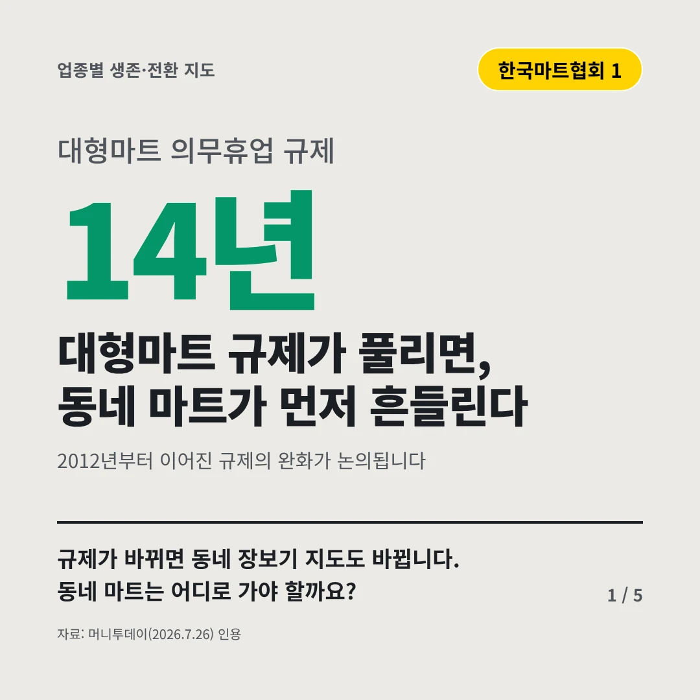
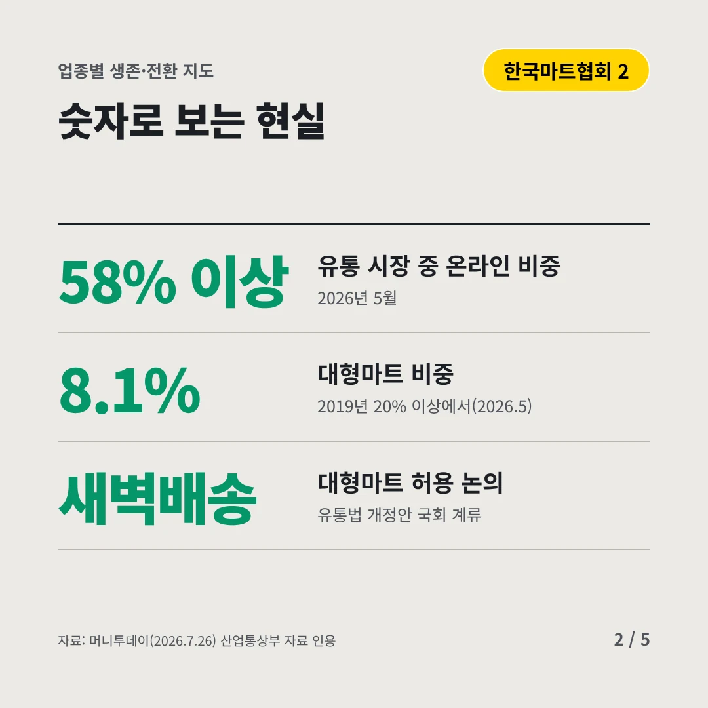
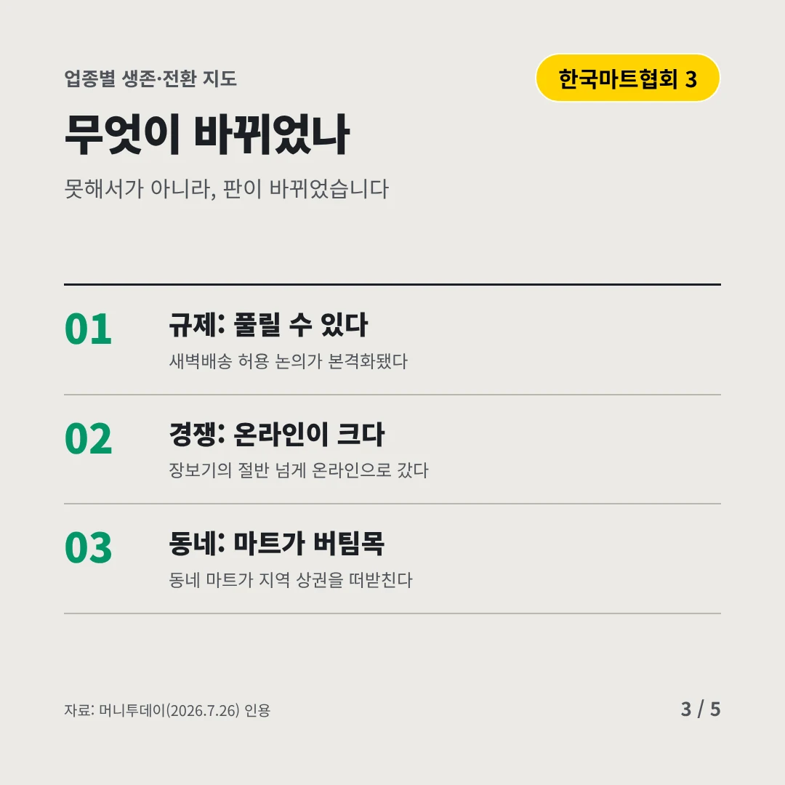
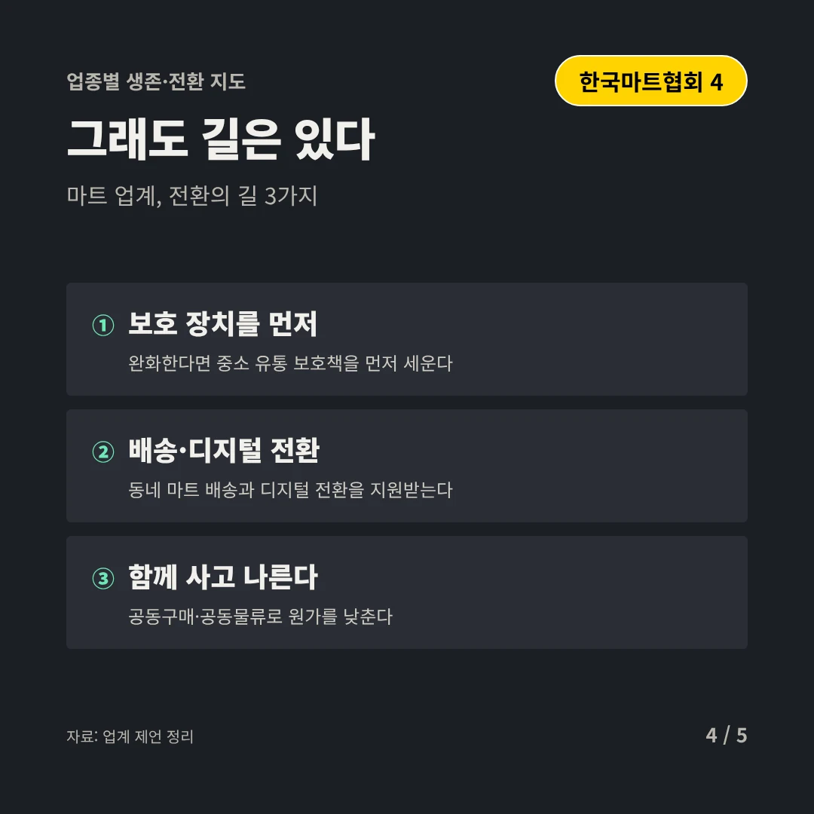
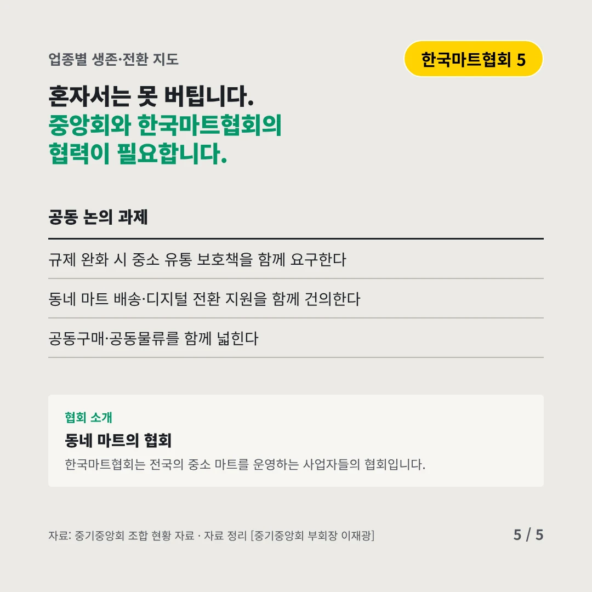
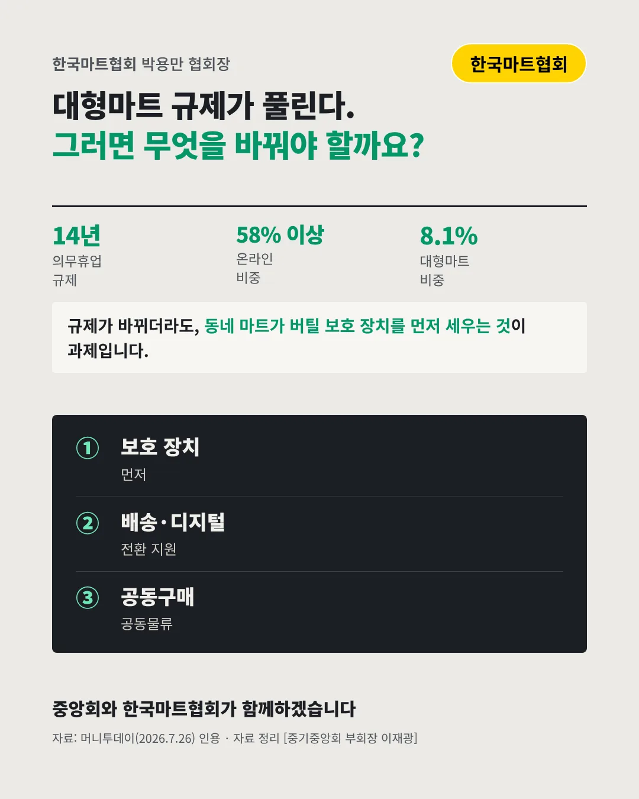

한국마트협회
대형마트 규제가 풀리면, 동네 마트가 먼저 흔들린다
14년 대형마트 의무휴업 규제






규제가 바뀌면 동네 장보기 지도도 바뀝니다. 동네 마트는 어디로 가야 할까요?
숫자로 보는 현실
- 58% 이상유통 시장 중 온라인 비중2026년 5월
- 8.1%대형마트 비중2019년 20% 이상에서(2026.5)
- 새벽배송대형마트 허용 논의유통법 개정안 국회 계류
무엇이 바뀌었나
- 규제: 풀릴 수 있다새벽배송 허용 논의가 본격화됐다
- 경쟁: 온라인이 크다장보기의 절반 넘게 온라인으로 갔다
- 동네: 마트가 버팀목동네 마트가 지역 상권을 떠받친다
그래도 길은 있다
- 보호 장치를 먼저완화한다면 중소 유통 보호책을 먼저 세운다
- 배송·디지털 전환동네 마트 배송과 디지털 전환을 지원받는다
- 함께 사고 나른다공동구매·공동물류로 원가를 낮춘다
한 장 요약

협회 소개
한국마트협회는 전국의 중소 마트를 운영하는 사업자들의 협회입니다.
자료: 머니투데이(2026.7.26)